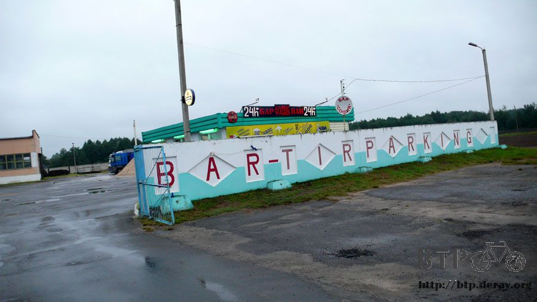
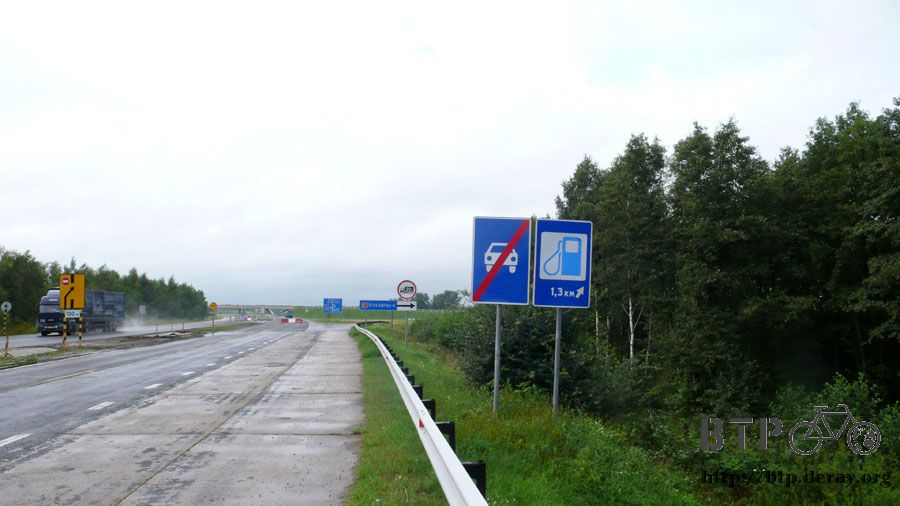
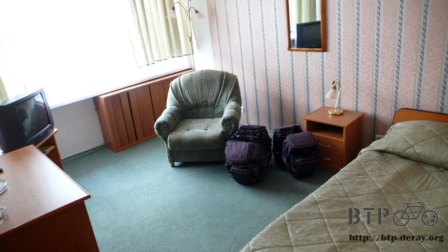

極限的味道
帳篷這種東西該怎麼說呢，夜間低溫不到十度的時候都是靠它擋風、蚊蟲飛舞肆虐的危機也是靠它庇佑，少了它露營就會辛苦十倍以上。
但是每次躺進帳篷裡都熱得全身冒汗，幾乎是睡在自己的汗水裡面，材質的設計大概是為了保溫所以不讓熱氣外散，搞得裡面又悶又熱。
必須把臉靠在蚊帳的地方對著外面呼吸涼快的空氣才有辦法活下來，這個時候要是帳篷裡在多放一條睡袋，那真是熱到寧可去睡地板給蚊子叮。
早上六點整起床，小木屋外的停車場還有兩輛車昨天開進來之後就沒有離開，大概是夜間開車太累所以進來休息一晚。
夜間的雨下得突然，白天沒有任何徵兆，聽到雨聲時還以為是睡迷糊的錯覺，早上起床看到一片陰霾的天氣才知道老天又變臉了。
本來應該是日上三竿的時刻，卻一點太陽的影子也看不到，伴隨著絲絲的細雨，今天就要抵達國境，也是在白俄羅斯的最後一天了。
騎不到五公里就看見餐廳，招牌上寫二十四小時營業，走過去看則是大門深鎖，想躲雨吃早餐卻不得其門而入。

繼續找下一間餐廳，早上剛出發時穿得比較多，一件無袖的白色睡衣，這件可是環法時每天穿在身上的衣服，這次又帶出來跟著走。
爬出帳篷的時候冷得受不了，當成棉被蓋的厚衣服也穿在身上，然後再穿上風衣外套，這樣一共就是三件衣服了。
騎車一段時間之後身體慢慢的就暖和了起來，這些保暖的衣服當下變得非常累贅，在天橋下躲雨順便換成薄的衣服比較涼快。
大概三十公里之後才發現這間餐廳，不是掛二十四小時的牌子，但是卻有營業，出現的正是時候呀，早餐～午餐～寫遊記都靠你了。
我在裡面大吃大喝兼躲雨，小多當然不能在外面淋雨受苦，餐廳的外頭有遮雨棚的戶外座位，小多就放在這邊休息片刻吧。
進到餐廳之後，自以為很酷的拿出一張一萬元放在桌上，跟服務生說把這些錢全部都花光，有什麼好料儘管送上來。
結果是吃到好料沒錯啦，這碗又酸又燙的湯真是料多味美，臘肉、酸黃瓜跟一些有的沒的都在裡面，配上麵包條吃滋味還不錯，但總覺得這跟大餐的差距有點遠。
而且連飯後的咖啡都沒有，一萬元就只能吃這樣呀？
吃完之後將餐具收到櫃台，問店員說沒有肉類的食物嗎？
店員回答說『有呀～可是你付的錢不夠吃』，為了滿足口腹之慾，口袋裡又掏出了一張一萬元，終於端上了一盤超厚的煎牛排。
雖然看起來不怎麼樣，但吃進嘴巴裡的爽快度真是無可比擬的讚，這樣才叫人生嘛～睡路邊或是公車站沒關係，難為了肚皮就是跟自己過不去。
在餐廳待到十點半，外頭的雨勢總算停歇，太陽公公終於露臉，這間餐廳出現的時間點實在太好了，躲雨躲得絲毫不差。
昨天一不小心就騎了將近兩百公里，今天只需要騎短短的八十公里就可以進城，這麼短的距離簡直是一邊打哈欠一邊騎車，完全沒放在眼裡。

右邊的告示牌除了加油站在一點三公里之外，另一個是說汽車專用道結束了。
不瞞您說，這一路從離開明斯克開始，M1公路就變成汽車專用道，由於沒有任何的替代道路，所以硬上，不把專用道的標示當一回事。
反正只有三天的路程，撐一下就好了，萬一倒楣被警察攔下來再想辦法解釋，但一路上警車經過那麼多台，也沒有被攔過。
遠遠看到的時候，我還以為這些羊是雕像，尤其是後面那一隻黑的，動也不動的站在樹枝上不知道在幹嘛。
早上在餐廳把水壺給裝滿，喝光一瓶的時候就到加油站買兩公升的果汁，七百CC裝到水壺裡，其它的就一口氣灌進肚子。
不知道是不是我拿相機的動作很奇特，拍照的時候總會有人盯著我看，應該學一個低調的拍照姿勢才能捕捉到有趣的畫面。
請相信我沒有那麼無聊，把錢丟在地上然後說是自己撿到的，這張一百元真的是在路邊看到。
在知道白俄羅斯的貨幣全部都是紙鈔之後，我就不奢望可以在路邊撿到錢，畢竟要撿硬幣比撿紙鈔容易很多。
結果運氣很好的還是撿到這一張一百元，如果換成其它國家的貨幣，那會高興一整天，但這是白俄羅斯的BLR，一百元換成台幣只有一塊五毛錢。
撿到錢的高興還沒來的及享受，懊惱的事情又來了，後輪再度爆胎，距離上次不過才兩天而已，而且又是後輪。
累積至今前輪只爆胎過一次，而後輪爆胎的次數高達七次，這個比例實在不能用一句巧合就帶過。
卸下輪胎之後看著外胎磨損的情形，難道這已經是極限了嗎？
刺破輪胎的兇手和上次一樣只是一根銅黃色的小鐵絲，連這樣的東西都能輕易的刺穿外胎，那帶再多的內胎來換都不夠呀。
包包裡全新的內胎只剩下一條，還有七條破掉的沒有補，如果把這條新的內胎用掉的話那就沒有了。
拆下破掉的內胎，檢查外胎內側有沒有什麼異物，手指沿著胎面仔細的摸索著，發現很多地方都變成這樣。
照片中央那個白白的絲狀物就是這條胎的極限了，整條胎都已經要磨損殆盡，之前環法的時候用比較輕薄的外胎就遇過這樣的情況，外胎被磨到爛。
爆胎的次數越來越頻繁，好像也不是一直換內胎就有辦法解決，看來這裡就是原裝外胎的極限了，既然如此，那就換外胎吧！
在換外胎之前要先講一個故事，發生在我當兵的時候，當時我已經剩不到兩個月就要退伍，就是別人叫我去做事情，我會跟他說『聽不懂』的狀態。
有一次帶一個菜我好幾梯的學弟一起去出公差，記不起來是司令部的部慶還是什麼鬼節日，總之要沿著草皮的外圍釘一整排的旗座，到時候要插國旗用。
因為大鐵鎚只有一隻，理所當然的我就跟學弟說『學弟你先敲，我在旁邊監工，到時候如果累了再跟我說，可以換手。』
有點概念的學弟怎麼可能叫學長換手，當然是自己一個人認命的敲完全部的旗座，還要狗腿的說『學長監工辛苦了，學弟買飲料請學長喝。』
可惜這個學弟很沒有概念，沒過多久就開始喊手痠，『學長～好累喔～可以換手嗎？』
當下我就跟他說『可以呀～那有什麼問題，右手痠的話你就換左手繼續敲，別說學長虐待你。』
故事講完了，這是真實的故事，當兵就是這樣子，習慣就好了～講這個換手故事的用意在於接下來要進行的工作，換外胎。
由於後輪磨損的比較嚴重，相較之下，一樣是騎了一萬一千五百多公里，前輪看起來就還算可以，也只爆胎過一次，勉強還能看見胎面原本的紋路。
上面那一條外胎是前輪，下面的則是後輪，兩者一比較就可以清楚的看到後輪已經快要掛點了。
既然換手可以右手換左手，那換外胎也可以前輪換後輪，還不到新胎登場的時候，我不相信原裝的外胎撐不到巴黎呀！

有人問說這條外胎怎麼那麼猛，是不是秘密製作的特殊規格，其實只是一般的外胎而已，KENDA好像是台灣的廠商，品質不錯喔～值得嘉許。
開始動工，小多街邊放倒，前後輪都卸下，然後各自拆下內胎跟外胎，左邊的是前輪，右邊的是後輪，搞清楚之後就開始交換使用。
前輪的內胎本來就是好的，換完之後灌飽氣就可以裝回去，後輪爆胎的問題還沒有處理，最後一條新的內胎不想這麼容易就用掉，所以當場補胎。
攜帶了好久的補胎片總算派上用場，體積只有小小的一個盒子，還找了一下才從行李中翻出來。
內容物很簡單，一片咖啡色的砂紙，六片透明的免膠補胎片，等等～只有六片？
這個時候我不自覺地又大聲的唸出一個字，不好意思～修養不是很好，還好國罵在白俄羅斯沒人聽得懂。
才六片？太少了吧，爆掉的內胎就有八條耶，那不就是說連補都補不完的意思嗎。
只好省一點用，如果連新寄來的輪胎中的內胎都拆出來用的話，接下來的路還有八次爆胎的機會。
補胎超容易，先找到破洞的地方，然後簡單的擦乾淨，接著用砂紙磨過，最後貼上補胎片就搞定了！
免膠卻黏到不行的補胎片連指紋都給黏上去，猴子也會的補胎工作輕鬆完成。
這一個前後輪互換外加補胎的工程在路邊耗去一個半小時，就當作是休息時間以及當街展示露天腳踏車店的工夫，因為會有人圍觀，所以動作要帥氣一點。
這是內胎的規格，原裝的已經破掉收起來在行李中，目前用的都是備用內胎，沒什麼耐不耐用的問題，一刺穿肯定爆。
不知道是不是心理作祟，明明只是前後輪互換，又不是換上新的輪胎，但騎起來感覺就是不一樣，相當有嶄新的味道，此刻還不是極限，還能再往巴黎騎。
通過這個最後的收費站之後接下來的城市就是邊境之都了，今天打算在那邊找間旅館好好睡一覺，網路不敢奢望，每次想找都沒有，不如就隨意一點，有看到再說吧。
繼續沿著M1公路騎，穿越白俄羅斯真是輕鬆簡單的事情，除了在首都稍微迷路之外，根本沒有難度可言。
可是騎到這邊的時候讓我慌了一下，M1公路要拐彎了，跟我要去的邊境之都不一樣，本來以為沿著M1就可以騎到波蘭，只是路換一條名字而已，看來沒那麼容易。
進入城市之後又要有迷路的心理準備了，M1公路掰掰～從莫斯科一路騎到這邊，感謝你的引導。
入城之前看到的地圖，根本就是鬼畫符，誰看得懂這是什麼東西？
藍色那一條是什麼，河流還是國界？路名對沒有地圖的我來說也是沒意義，比較有幫助的是上頭畫了很多張小床，城裡的旅館還不少。
耶～抵達了，只花了五天就穿越白俄羅斯，相當的快速而且有效率，跟之前得花上一兩個月才能騎完一個國家實在輕鬆太多了。
中間那個藍色的指示牌寫著WARSHAWA，看起來很像是波蘭的首都華沙，可是結尾多了一個WA，變成華沙哇，應該是它沒錯了，跟著騎就能進波蘭。
這邊的指示牌都很實用，華沙哇的下一個寫的是『網路』，真的要找的時候怎麼也找不到，沒抱太大的期望反而輕鬆的就發現。
底下寫著一百五十公尺，然後畫右轉的箭頭，這樣的標記方式每次都讓我很傷腦筋。
到底是往前方直走一百五十公尺之後右轉，還是現在右轉然後走一百五十公尺呢？
總之順利的找到了網路的店面，睽違了八天～拖稿了一次～網路總算再度出現。
裡頭是高級的液晶螢幕，拿著電腦進去說能不能接自己的電腦上網，店員則叫我到外頭繳錢。
之前在哈薩克跟俄羅斯都是先上網，然後看使用的流量頻寬來結帳，這裡則要先繳錢，管它的～細節不重要，能夠連上網就好了。
外頭是像電信局的櫃台，又拿出了一張一萬元，跟媽媽員工說要上網，費用不明，傻傻的笑著結果就先繳了兩千元。
拿著收據給網咖的員工，總算能夠用網路了，再度拿出電腦問說能不能接這一台上網，對方搖搖頭說不行。
最不幸的情況也就是這樣了，拿出隨身碟開始拷貝要上傳的遊記，然後用有如烏龜在爬的速度一點一滴的上傳到網路上。
每秒鐘上傳的速度大概是2KB，瞪得我眼睛都要突出來，整個也太慢了吧，是整間店共用一個數據機在撥接上網嗎？
網咖的電腦裡有一個小程式在執行，很明顯的有一個數字不斷的再增加，100～170～230，跳得很快，擺明了就是說剛才繳的錢只能上網到數字跳到兩千為止。
跳到1800的時候遊記上傳不到三分之一，跳離椅子又跑去外面繳了三千元，收據拿回來儲值，以免上傳到一半變成做白工。
網頁無法顯示中文，除了瞪大眼睛看著遊記上傳之外什麼也不能做，八天的遊記足足花了兩個半小時才上傳完畢，浪費生命就是用來形容我在網咖苦等的情況。
總算是搞定了遊記的問題，費用共計四千一百一十元，預繳了五千元居然還可以拿著收據回去櫃檯退錢，服務還算蠻講理的。
搞定後就騎車吧，別忘了今天的主要目的是找旅館。
總之就往西邊騎，眼睛留意有沒有旅館的招牌，網路都能找到，找間旅館不難吧？
路旁還掛著禁止排放廢氣的告示牌，很有意思，街道巷弄裡也會掛著『此區可以踢球』，到馬路邊則會掛上『踢球區到此結束』，啞口無言不知道該說什麼好。
還沒找到旅館倒是先發現了商店，而且不是小窗口經營的那種，而是規模很大的超級市場，可以自己拿東西去結帳，好久沒有這樣購物了。
這間商店出現的時機太巧了，包包裡的食物早就吃光光，唯一剩下的只有半條口香糖，越嚼越餓。
不需要比手畫腳，自己可以拿喜歡的東西，整個人在裡面買紅了眼，抱著兩大盒果汁、五條蛋糕、一條麵包跟一包餅乾去櫃檯結帳。
店員在收銀機打上一萬六千多的時候，心裡只覺得便宜～吃頓飯都不只這個錢，買這麼多東西太划算了。
掏包包要找錢，才發現每次都用一萬塊去結帳，裡面盡是一堆千元以下的零頭，東湊西湊的才付完帳。
接下來就容易啦，將這些糧食打包起來吃上三天不成問題，好吃的蛋糕進入歐洲之後價錢又要開始上漲了，到時候便宜的東西只剩下乾麵包而已。
帶著滿滿的糧食補給，往西邊繼續找旅館的蹤影，騎了一段路都沒看到，還以為是不是旅館招牌的寫法改了？
在這一棟賭場的隔壁有一間同名的旅館，共同經營，隔壁又是奢華的賭場，這種旅館住一晚上想必不便宜吧？
外觀看起來就蠻整齊大方的，進去之前先衡量一下預算，以免到時候掙扎要不要花大錢住一晚。
看這個地段跟外觀，同時想起莫斯科最便宜的旅館一晚上要一百五十美金，多虧住在MSI的免費宿舍才能開心的玩上六天而沒破產。
這座城市位於歐洲的大門，隔壁就是波蘭了，到底定價多少算合理呢？
最後心裡的預算是五十美金以內就住，一百美金以內如果要住也可以，那接下來要有勒緊褲帶吃泡麵的準備，一百美金以上就掰掰閃人。
旅館櫃台的價目表，大大小小的數字掛牌跟非常詭異的定價，這邊應該是用美金或是歐元為基準，依照匯率換成白俄羅斯的貨幣然後標出來。
身上所剩的白俄羅斯貨幣已經不夠付這筆住宿費，拿出五十美金問能用這個結帳嗎？
這間旅館的店員眼光比較好，美金豈有不收的道理，附帶衛浴的單人房用美金付帳是三十二元，比我估計得還要便宜很多，馬上點頭答應住下。
住宿費用是明天退房才繳，護照則要押在櫃台，房間在九樓，電梯很窄小多進不來，警衛也說自行車不能放上去，開了儲藏間的門給我放小多。
電梯老舊得很有趣，不按關門的按鈕，門是不會自動關起來的，俄文看不懂只好每一個寫字的都按一下，連警鈴都響了一聲。
樓層的按鈕按下去就會卡住，不會彈起來當然也不會發光，相當古老的電梯，這棟建築外觀這麼新，裡面則是年代久遠的感覺。
三十二美金的房間超級舒適，又寬又大的房間，要睡十個人都沒問題。

露營了這麼多天終於可以好好的睡上一覺，並且能洗個熱水澡放鬆心情。
鏡子中照映出來的外套口袋很滿，剛才在商店買了太多東西包包裝不下，外套又變成小叮噹的口袋，裡頭裝了一公升的果汁跟一條麵包，這同時也是今天的晚餐。
房間位於九樓，從窗戶看出去的景色很漂亮，落日的方向是西邊，也就是明天要進入的波蘭，更是終點巴黎的方向～剩下的路不遠了。
訂一個目標，三個星期內騎不到的話，接下來就只穿一條四角褲騎進巴黎～說到做到！
繼續閱讀：8.21 得罪了方丈還想走？
俄羅斯-盧布－ 1：1.3 台幣
8.20 |
總計：1320元 |
餐廳酸酸的綜合蔬菜肉湯、超厚微波牛排、麵包、咖啡17110元、有如烏龜在爬的網路4110元、商店超級大採購果汁兩盒、各式口味蛋糕五條、麵包一條、餅乾一包16570元、久違的豪華旅館67740元。總計105530BLR，折合盧布1320元 |
|